犬貓認知障礙症候群（CDS）
Cognitive Dysfunction Syndrome in Dogs and Cats｜講者：陳緯 獸醫師（Wei Chen, DVM, MS；台中貝爾動物醫院博館分院神經科主治醫師）
2026 年 11 月 19 日｜聯盟獸醫教育中心 卓越講堂
講義版：講者投影片 PDF（CDS_20261119_CW.pdf，47 張＋封面）全部依序放入。投影片編號依右下角頁碼。尚無錄音。
⭐ 本場重點
- CCDS 是進行性神經退化疾病，>8 歲犬盛行率 14–35%、15–16 歲達 68%，但 <2% 被正式診斷
- 病理和人類阿茲海默症相似：Aβ 斑塊與 CAA、神經發炎與能量代謝低下、膽鹼／多巴胺（MAO-B↑）／GABA 系統耗竭、腦溝變寬、腦室擴大、海馬迴萎縮
- 排除性診斷：先排除甲狀腺機能低下、Addison、失明耳聾、骨關節炎疼痛、結構性腦病；DISHAA 並非 CCDS 特有
- 量表：CCDR（13 題，特異度高，適合研究）、CADES（17 題，可分級、追蹤早期進展）；MRI 主要用來排除其他病；NfL 是新興生物標記
- 台大回溯研究（講者碩論）：239 隻前腦症狀老犬中 腦腫瘤 48.5%、CCDS 15.4%；支持 CCDS 的是年紀較大、沒有癲癇、沒有偏側性缺損（CCDS 偏側缺損僅 10.8%，癲癇 5/37）
- 肌陣攣可能和 CCDS 有關（Brühl 2026 問卷 89%），但有研究設計與報告偏差
- Selegiline 0.5–1 mg/kg SID 早上給；propentofylline 5 mg/kg BID；焦慮與睡眠可用 gabapentin、BZD、SSRI/TCA（注意交互作用）
- 非藥物：環境豐富化、行為支持；不活動老犬 CCDS 風險高 6.47 倍
- 營養：6.5% MCT＋BPB 雙盲研究第 90 天所有面向改善、反應率 88%；另有 omega-3、抗氧化、L-carnitine、SAMe、phosphatidylserine、homotaurine
- 貓 FCDS：11–14 歲 28–33%、>15 歲 50%；VISHDAAL，夜間嚎叫最常見（40%）；先排除高血壓、CKD、甲亢、OA；用 AAFP 十個問題主動詢問
- 貓的處置：低入口貓砂盆、夜燈、擺設不變、費洛蒙；MCT 可能造成厭食，適口性很重要；藥物為仿單外，壓力管理更重要
場次資訊
▾


- 主題：認知障礙症候群 Cognitive dysfunction syndrome in dogs and cats。
- 講者：陳緯 獸醫師（Wei Chen, DVM, MS），台中貝爾動物醫院博館分院神經科主治醫師（2025.10 起）。台大臨床動物醫學研究所碩士（小動物臨床神經醫學研究室）；曾任台大動物醫院約聘實習獸醫師、台北碩聯動物醫院神經內科醫師。
- 投影片中的台大回溯研究（master thesis, Wei C., 2025）就是講者自己的碩士論文。
- 大綱：犬 CCDS 概論 → 臨床診斷思路 → 多模式治療 → 貓 FCDS → 結論。
- 形式：聯盟獸醫教育中心 卓越講堂（2026-11-19，線上）。
1. CCDS 概論與病理生理
▾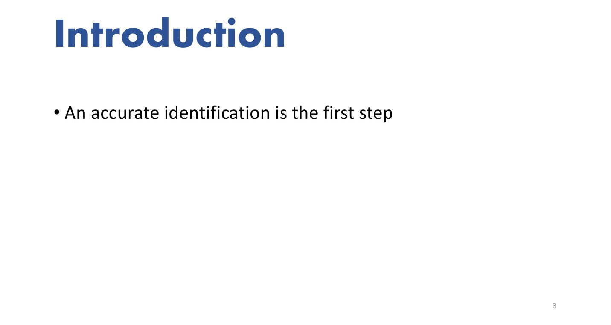
正確辨識是第一步。
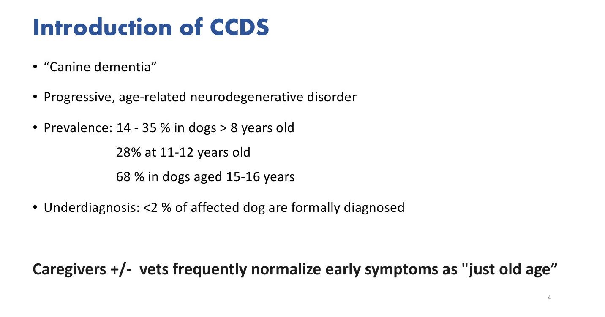
- 俗稱「犬失智症」；進行性、與年齡相關的神經退化疾病。
- 盛行率：>8 歲犬 14–35%；11–12 歲 28%；15–16 歲高達 68%。
- 嚴重低估：受影響犬只有 <2% 被正式診斷；飼主（甚至獸醫）常把早期症狀當成「只是老了」。
病理生理：阿茲海默症的天然轉譯模型
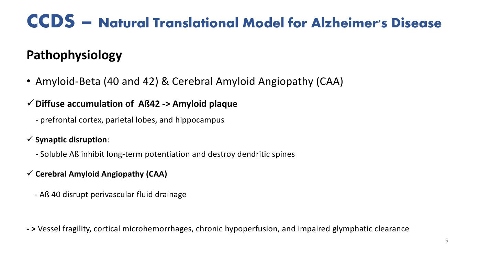
- Aβ42 瀰漫性堆積形成類澱粉斑，分布在前額葉皮質、頂葉、海馬迴。
- 突觸破壞：可溶性 Aβ 抑制長期增益作用（LTP）、破壞樹突棘。
- CAA：Aβ40 干擾血管周圍液體引流 → 血管脆弱、皮質微出血、慢性低灌流、類淋巴（glymphatic）清除受損。
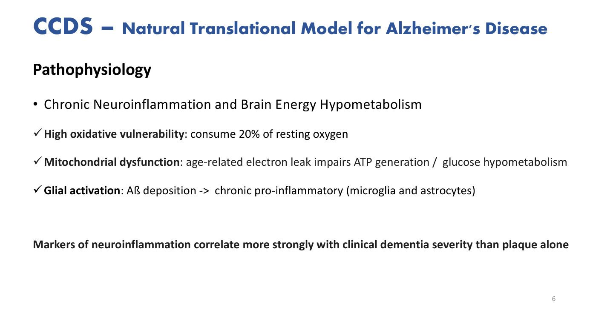
- 大腦耗用靜止時 20% 的氧，對氧化傷害特別脆弱。
- 粒線體功能異常：老化造成電子漏失 → ATP 生成受損、葡萄糖代謝低下（這是後面 MCT／酮體飲食的理論基礎）。
- 膠質細胞活化：Aβ 沉積 → 小膠質細胞與星狀膠質細胞慢性促發炎。
- 神經發炎指標和失智嚴重度的相關性，比類澱粉斑本身更強。
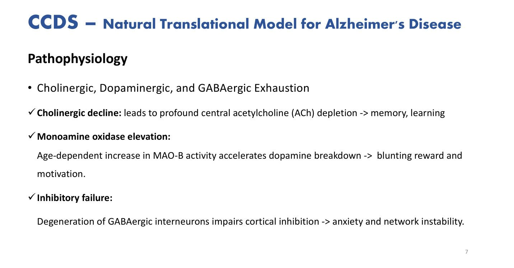
- 膽鹼性衰退：中樞乙醯膽鹼大量減少 → 記憶、學習變差（→ phosphatidylserine 的作用點）。
- MAO-B 活性隨年齡上升：加速多巴胺分解 → 獎賞與動機下降（→ selegiline 的作用點）。
- 抑制失能：GABA 中間神經元退化 → 皮質抑制不足 → 焦慮、神經網路不穩定（→ gabapentin、BZD 的作用點）。
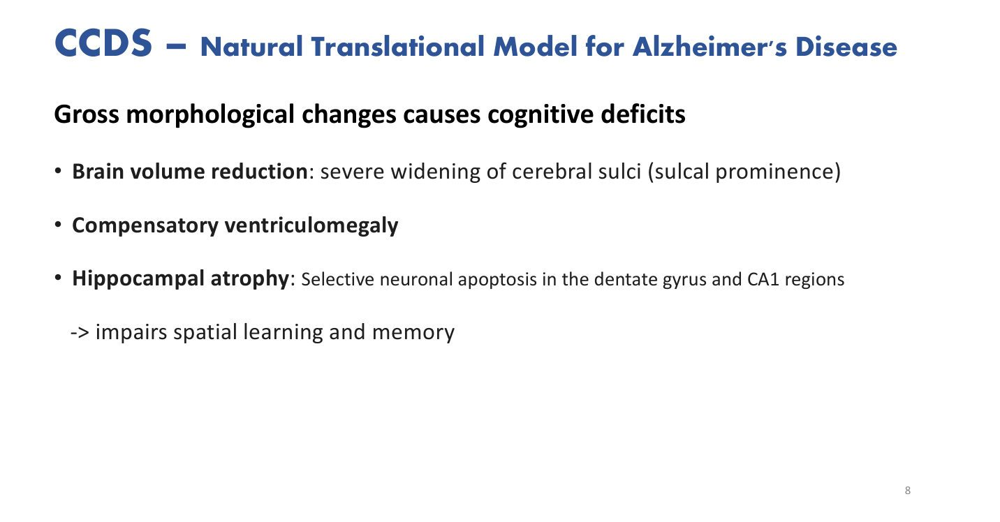
- 腦容積減少：腦溝明顯變寬。
- 代償性腦室擴大。
- 海馬迴萎縮：齒狀回與 CA1 區選擇性神經元凋亡 → 空間學習與記憶受損。
2. 診斷思路
▾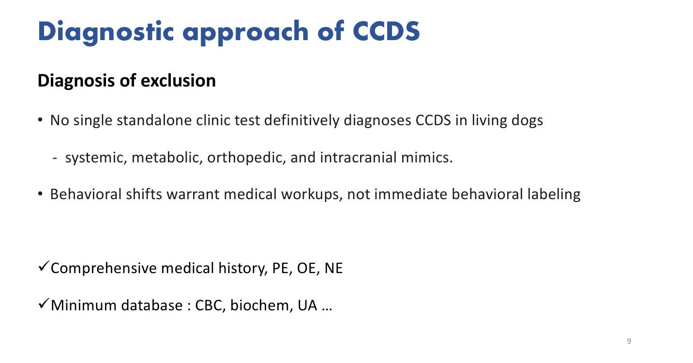
- 排除性診斷：沒有任何單一臨床檢查能在活體確診 CCDS；要排除全身性、代謝性、骨科與顱內疾病的「模仿者」。
- 行為改變應該先做醫療檢查，不要直接貼上「行為問題」標籤。
- 完整病史、理學檢查、眼科檢查、神經學檢查；最低資料庫：CBC、生化、尿檢⋯

- 內分泌疾病：甲狀腺機能低下、Addison⋯
- 感官退化：失明、耳聾
- 慢性疼痛：骨關節炎
- 結構性中樞神經疾病
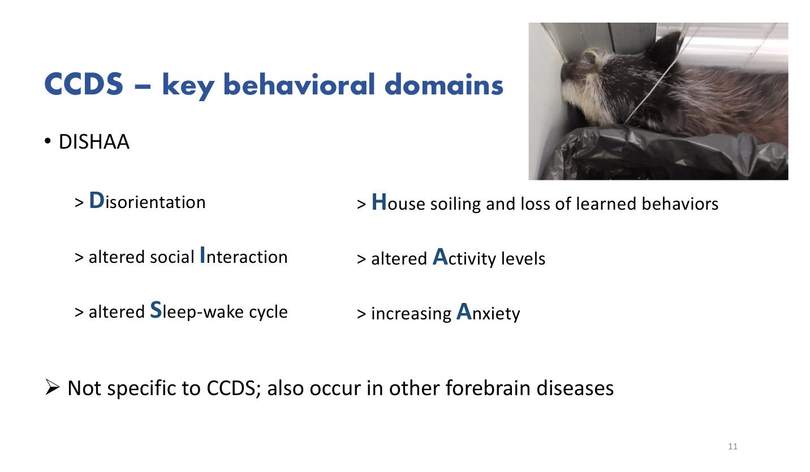
| DISHAA | 中文 |
|---|---|
| Disorientation | 定向感障礙 |
| altered social Interaction | 社交互動改變 |
| altered Sleep–wake cycle | 睡眠週期改變 |
| House soiling and loss of learned behaviors | 亂大小便、已學會的行為消失 |
| altered Activity levels | 活動量改變 |
| increasing Anxiety | 焦慮增加 |
注意：這些表現不是 CCDS 特有，其他前腦疾病也會出現。

| 量表 | 內容 | 優點 | 缺點 |
|---|---|---|---|
| CCDR（Canine Cognitive Dysfunction Rating；Salvin 2011） | 13 題 | 整體準確度、特異度高（高分時 >98.9%），信度好，適合研究 | 對很早期／輕微的認知變化較不敏感 |
| CADES（Canine Dementia Scale；Madari 2015） | 17 題 | 可分級（正常、輕度、中度、重度），適合追蹤早期進展 | 對飼主來說較複雜 |
進階影像（MRI）
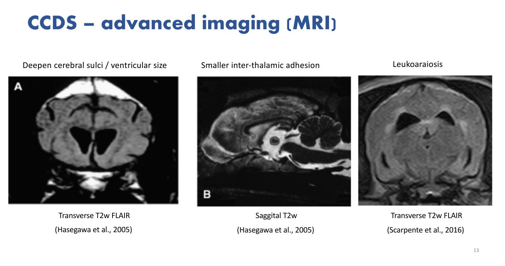
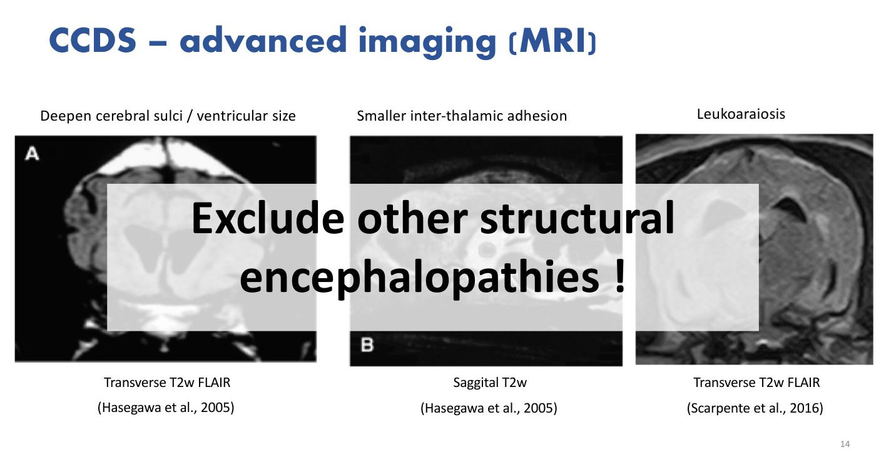
- CCDS 的 MRI 表現：腦溝加深、腦室變大（Hasegawa 2005，橫切 T2 FLAIR）；丘腦間黏合（inter-thalamic adhesion）變小（矢狀 T2）；白質疏鬆（leukoaraiosis）（Scarpente 2016，FLAIR）。
- MRI 更重要的目的是排除其他結構性腦病。

- 血漿 Aβ：各研究結果不一致。
- 神經絲輕鏈（NfL）（血漿／CSF）：和 CADES、CCDR 分數高度相關，反映進行中的神經軸突損傷。
- 仍需更多研究。
3. 臨床上哪些參數能幫忙？（台大回溯研究）
▾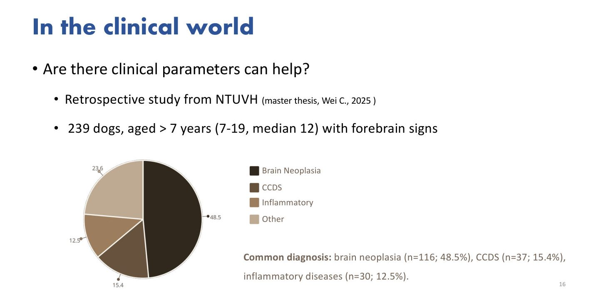
- 239 隻 >7 歲（7–19 歲，中位數 12 歲）有前腦症狀的犬，最常見診斷：腦腫瘤 116 隻（48.5%）、CCDS 37 隻（15.4%）、發炎性疾病 30 隻（12.5%）、其他 23.6%。
- 也就是說，老犬出現前腦症狀，將近一半是腦腫瘤，CCDS 只佔約 1/7。
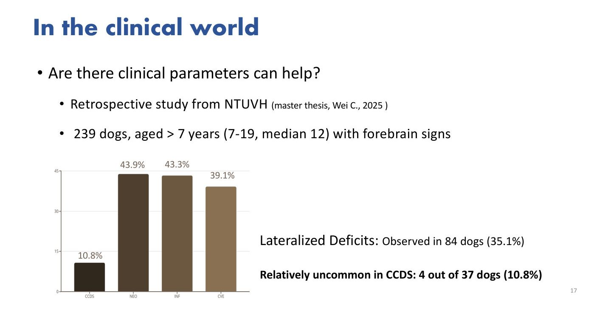
- 偏側性神經缺損：全體 84 隻（35.1%）有。
- 各組比例：CCDS 10.8%（4/37）、腫瘤（NEO）43.9%、發炎（INF）43.3%、腦血管（CVE）39.1%。
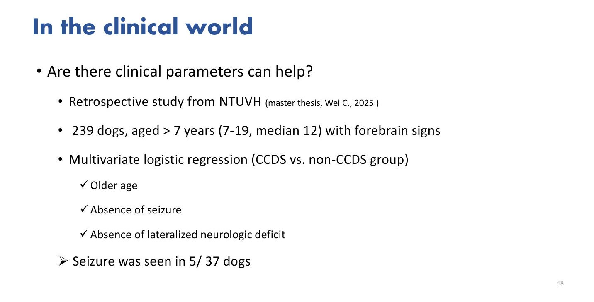
| 投影片 | 中文 |
|---|---|
| Multivariate logistic regression (CCDS vs. non-CCDS group) | 多變項邏輯斯迴歸，比較 CCDS 組與非 CCDS 組 |
| ✓ Older age | 年紀較大 |
| ✓ Absence of seizure | 沒有癲癇 |
| ✓ Absence of lateralized neurologic deficit | 沒有偏側性神經缺損 |
| ➢ Seizure was seen in 5/37 dogs | CCDS 組 37 隻中 5 隻有癲癇 |
- 5/37 ≈ 13.5%，癲癇不能直接排除 CCDS，但比例偏低。
- 老犬有前腦症狀，如果有癲癇或偏側性缺損（單側本體感覺缺損、單側威脅反射消失、往同一側轉圈），要優先懷疑結構性病灶，建議 MRI，不要直接歸因於老化失智。
4. 癲癇與 CCDS：肌陣攣
▾
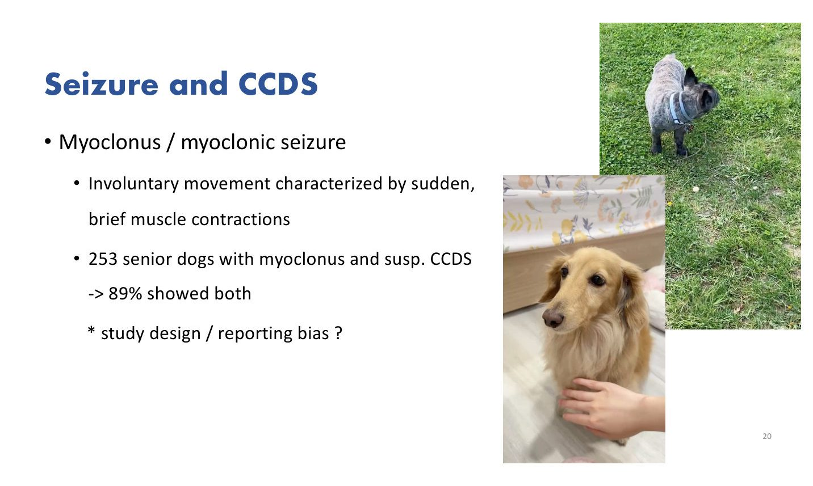

| 投影片 | 中文 |
|---|---|
| Not a common sign in CCDS, but may present | 癲癇不是 CCDS 的常見症狀，但可能出現 |
| Myoclonus / myoclonic seizure | 肌陣攣／肌陣攣型發作 |
| Involuntary movement characterized by sudden, brief muscle contractions | 不自主運動：突然、短暫的肌肉收縮 |
| 253 senior dogs with myoclonus and susp. CCDS → 89% showed both | 253 隻有肌陣攣且疑似 CCDS 的老犬 → 89% 兩者兼具 |
| * study design / reporting bias? | 研究設計／報告偏差？ |
引用論文：Brühl SM, Volk HA, Rohn K, Meyerhoff N. Myoclonus in geriatric dogs and its association with canine cognitive dysfunction: an online survey. Front Vet Sci, 2026（2026 年 2 月出版）。
- 線上問卷、飼主自願填寫：狗有這些問題的飼主比較會來填（選擇偏差）。
- 肌陣攣與 CCDS 多由飼主回報，不是獸醫或 MRI／EEG 確認，容易把顫抖、睡眠中抽動誤認為肌陣攣（報告偏差）。
- 收案對象本身就偏向兩者兼具，所以 89% 不能解讀為盛行率。
- 人類阿茲海默症也有肌陣攣與癲癇風險上升的現象，生物學上說得通，但犬的證據等級仍低。
5. 治療：藥物
▾Selegiline（MAO-B 抑制劑）

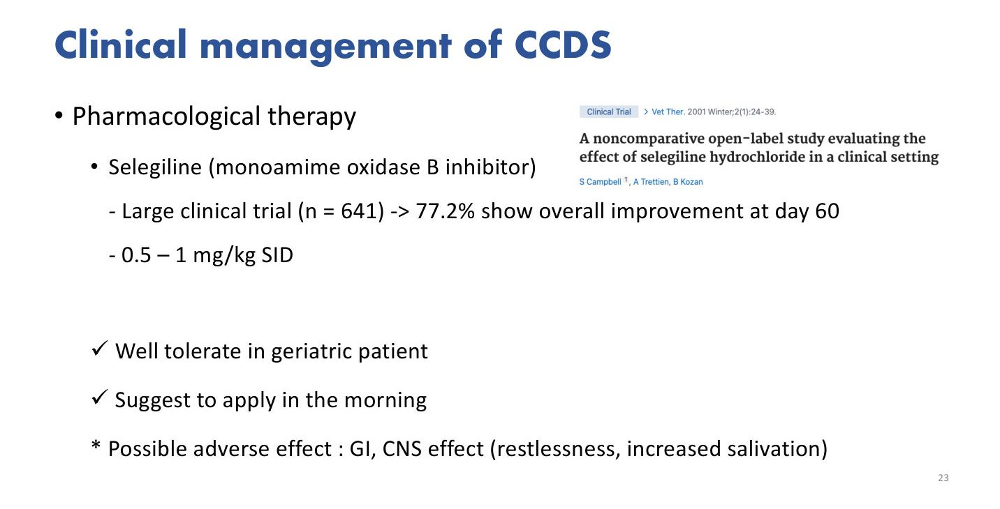
| 投影片 | 中文 |
|---|---|
| Selegiline (monoamine oxidase B inhibitor) | Selegiline：單胺氧化酶 B（MAO-B）抑制劑（投影片拼成 monoamime） |
| FDA-approved for CCDS | 美國 FDA 核准用於犬 CCDS |
| Inhibit degradation of catecholamines (ex. dopamine) in CNS | 抑制中樞兒茶酚胺（如多巴胺）的分解 |
| ✓ Potentially improved cognitive function / mood | 可能改善認知功能與情緒 |
| ✓ Neuroprotectant / reduce oxygen stress | 神經保護、減少氧化壓力 |
| Large clinical trial (n = 641) → 77.2% show overall improvement at day 60 | 大型臨床試驗 641 隻犬，第 60 天 77.2% 整體改善 |
| 0.5–1 mg/kg SID | 每天一次 0.5–1 mg/kg |
| ✓ Well tolerated in geriatric patient | 老年病患耐受性好 |
| ✓ Suggest to apply in the morning | 建議早上給藥 |
| * Possible adverse effect: GI, CNS effect (restlessness, increased salivation) | 可能副作用：腸胃道、中樞神經（躁動不安、流涎增加） |
引用論文：Campbell S, Trettien A, Kozan B. A noncomparative open-label study evaluating the effect of selegiline hydrochloride in a clinical setting. Vet Ther 2001;2(1):24–39.
- 為什麼早上給：selegiline 代謝產物含 L-amphetamine／L-methamphetamine，有輕微興奮作用，晚上給可能影響睡眠，而 CCDS 本來就常日夜顛倒。
- 77.2% 要打折看：Campbell 2001 是無對照、開放標籤試驗，飼主知道狗在吃藥，改善比例可能偏高。
- 藥物交互作用：不要和 SSRI（fluoxetine）、TCA（clomipramine、amitriptyline）、tramadol、amitraz（除蝨項圈／藥浴）併用，有血清素症候群風險；換藥時一般間隔約 2 週。
- 通常給藥後約 1 個月評估反應；美國商品名 Anipryl。
Propentofylline（黃嘌呤衍生物）
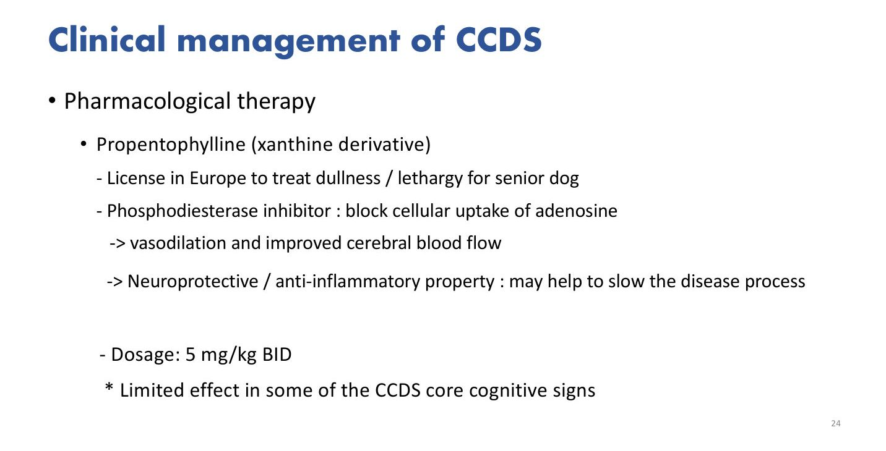
| 投影片 | 中文 |
|---|---|
| Propentofylline (xanthine derivative) | Propentofylline：黃嘌呤衍生物 |
| Licensed in Europe to treat dullness / lethargy for senior dog | 歐洲核准用於老犬精神沉鬱、嗜睡 |
| Phosphodiesterase inhibitor: block cellular uptake of adenosine | 磷酸二酯酶抑制劑：阻斷細胞對腺苷的回收 |
| → vasodilation and improved cerebral blood flow | → 血管擴張、改善腦血流 |
| → Neuroprotective / anti-inflammatory property: may help to slow the disease process | → 神經保護、抗發炎，可能延緩疾病進展 |
| Dosage: 5 mg/kg BID | 劑量：5 mg/kg 每天兩次 |
| * Limited effect in some of the CCDS core cognitive signs | 對部分 CCDS 核心認知症狀效果有限 |
💡 歐洲商品名 Vivitonin／Karsivan。定向感、日夜顛倒、居家訓練退化這類核心認知症狀，第一線仍是 selegiline。
針對焦慮與睡眠的藥物

- 針對 GABA／血清素路徑 → 處理焦慮、睡眠週期紊亂：gabapentin、benzodiazepines、部分行為藥物／抗憂鬱劑（SSRI、TCA）。
- 要注意藥物交互作用與老犬的其他共病。
6. 治療：非藥物
▾環境豐富化

| 投影片 | 中文 |
|---|---|
| ✓ Cognitive enrichment — novel toys / puzzle feeders stimulate brain function; learning new simple tricks | 認知豐富化：新玩具、益智餵食器刺激大腦；學新的簡單指令 |
| ✓ Social enrichment: regular positive interaction (owner, other dogs…) | 社交豐富化：和飼主、其他狗規律的正向互動 |
| ✓ Physical enrichment — regular exercise; novel environment stimuli | 身體豐富化：規律運動、新環境的刺激（如換散步路線） |
行為支持
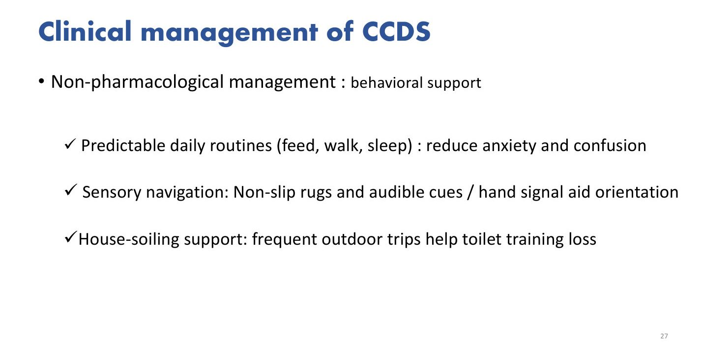
| 投影片 | 中文 |
|---|---|
| ✓ Predictable daily routines (feed, walk, sleep): reduce anxiety and confusion | 固定、可預期的作息（餵食、散步、睡覺）→ 減少焦慮與混亂 |
| ✓ Sensory navigation: non-slip rugs and audible cues / hand signals aid orientation | 感官導航：止滑地墊、聲音提示或手勢幫助定向 |
| ✓ House-soiling support: frequent outdoor trips help toilet training loss | 亂大小便：增加外出如廁次數，彌補如廁訓練退化 |
運動很重要
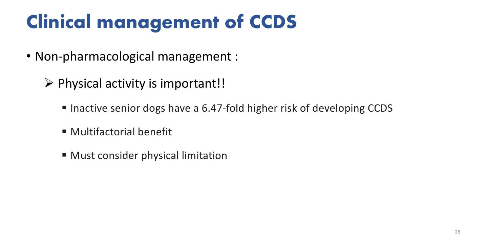
- 不活動的老犬發生 CCDS 的風險高 6.47 倍。
- 運動的好處是多方面的；但要考慮身體限制（關節炎等）。
7. 治療：營養介入
▾MCT 飲食

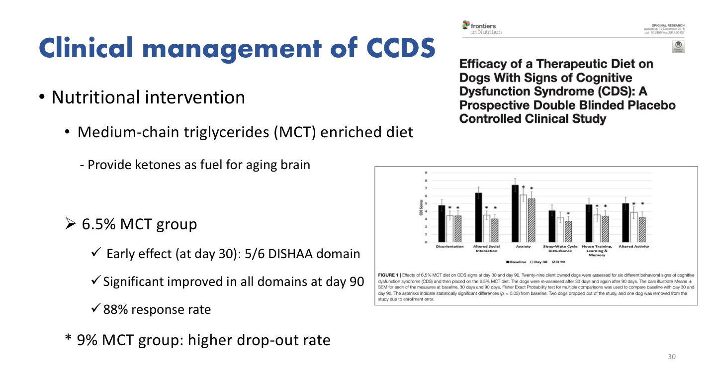

| 投影片 | 中文 |
|---|---|
| Medium-chain triglycerides (MCT) enriched diet — provide ketones as fuel for aging brain | 添加中鏈三酸甘油酯（MCT）的飲食：提供酮體作為老化大腦的能量 |
| 87 dogs；Control vs. 6.5% vs. 9% MCT | 87 隻犬；對照組 vs. 6.5% MCT vs. 9% MCT |
| Brain protective blend: DHA, EPA, vitamin E, vitamin C, and B vitamins | 護腦配方（BPB）：DHA、EPA、維生素 E、C、B 群 |
| 6.5% MCT group — early effect (at day 30): 5/6（另一版 4/6）DISHAA domains | 6.5% 組：第 30 天就有 5/6（另一版寫 4/6）個 DISHAA 面向改善 ❔ |
| Significant improvement in all domains at day 90 | 第 90 天所有面向都顯著改善 |
| 88% response rate | 反應率 88% |
| * 9% MCT group: higher drop-out rate | 9% 組退出率較高 |
引用論文：Pan Y et al. Efficacy of a Therapeutic Diet on Dogs With Signs of Cognitive Dysfunction Syndrome (CDS): A Prospective Double Blinded Placebo Controlled Clinical Study. Front Nutr, 2018.
護腦配方（BPB）
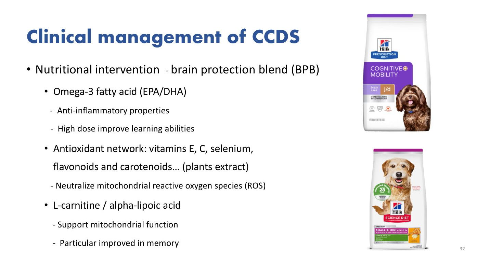
- Omega-3（EPA／DHA）：抗發炎；高劑量可改善學習能力。
- 抗氧化網絡：維生素 E、C、硒、類黃酮、類胡蘿蔔素（植物萃取）→ 中和粒線體活性氧（ROS）。
- L-carnitine／α-lipoic acid：支持粒線體功能，特別能改善記憶。
- 投影片例圖：Hill's Prescription Diet j/d Cognitive + Mobility、Science Diet Small & Mini Adult 7+ Senior Vitality。
SAMe

- 參與神經傳導物質合成與抗氧化路徑；可改善執行功能。
Phosphatidylserine

| 投影片 | 中文 |
|---|---|
| Major structural phospholipid of neural membranes | 神經細胞膜的主要結構磷脂 |
| Facilitates acetylcholine release → help with cholinergic decline (important factor for cognitive decline / memory) | 促進乙醯膽鹼釋放 → 改善膽鹼性衰退（認知與記憶退化的重要因素） |
投影片右側表格 Nonpharmaceutical Products Available for Cognitive Dysfunction in the Dog：
| 產品 | 成分 |
|---|---|
| Senilife | Phosphatidylserine、ginkgo biloba（銀杏）、pyridoxine（維生素 B6）、vitamin E |
| Activait | Phosphatidylserine、vitamin C、vitamin E、α-lipoic acid、L-carnitine、acetyl-L-carnitine、DHA、EPA、N-acetyl cysteine、selenium、coenzyme Q10 |
| Geriactive | Ginkgo biloba、ginseng（人參）、Cordyceps（冬蟲夏草）、bilberry（山桑子）、α-lipoic acid、cartilage extract |
| Senior Moment | Phosphatidylserine、DHA |
| Proneurozone | Vitamin E、B vitamins、acetyl-L-carnitine、folic acid、N-acetylcysteine、α-lipoic acid、fruit and herbal extracts（grape seed、rosemary、sage、bilberry、cranberry）、choline、Spirulina、soy lecithin、omega-3 fatty acids |
Tramiprosate／Homotaurine
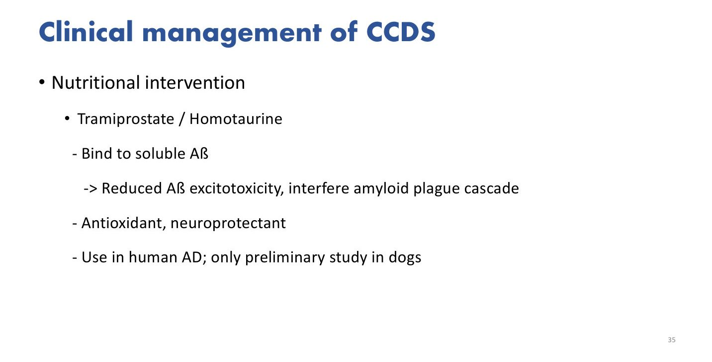
- 結合可溶性 Aβ → 減少 Aβ 興奮毒性、干擾類澱粉斑形成。
- 抗氧化、神經保護。
- 用於人類阿茲海默症；犬只有初步研究。
8. 多模式整合
▾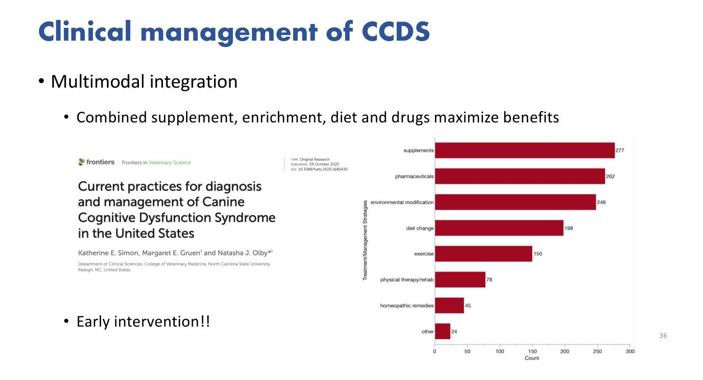
- 保健品、環境豐富化、飲食、藥物合併使用效果最大。
- 早期介入！！
9. 貓認知功能障礙症候群（FCDS）
▾
- 盛行率高：11–14 歲貓 28–33% 有症狀，15 歲以上上升到 50%。
- 低估：被飼主認為「健康」的 12 歲貓中有 42.2% 其實有症狀。
- 病理生理比犬 CCDS 和人類 AD 更不清楚：Aβ 沉積型態可能比較像沒有失智的老年人？另有腦萎縮、血管病變（微出血、梗塞）、氧化傷害⋯
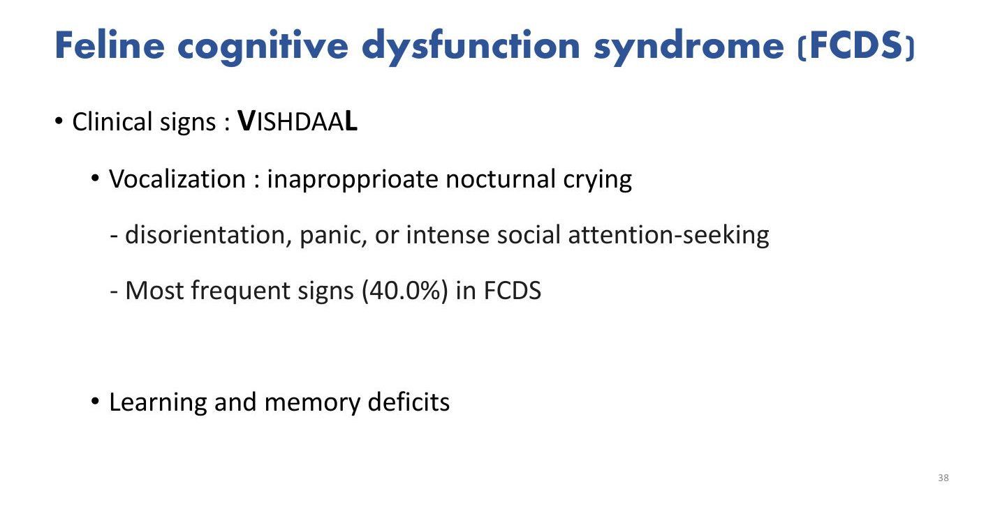
| 投影片 | 中文 |
|---|---|
| Clinical signs: VISHDAAL | 臨床症狀縮寫 VISHDAAL（貓比犬的 DISHAA 多了 V 和 L） |
| Vocalization: inappropriate nocturnal crying — disorientation, panic, or intense social attention-seeking | 異常叫聲：不適當的夜間嚎叫，原因可能是迷失方向、恐慌或強烈尋求關注 |
| Most frequent sign (40.0%) in FCDS | FCDS 最常見的症狀（40.0%） |
| Learning and memory deficits | 學習與記憶缺損 |

- 常見的干擾共病／鑑別診斷：全身性高血壓、CKD、甲狀腺機能亢進；骨關節炎、肥胖；其他腦病。
- 必要篩檢：生化、血壓、尿檢、神經學檢查、眼科檢查⋯

飼主不一定會主動提，要主動詢問。AAFP 2021 Feline Senior Care Guidelines（Ray et al., JFMS 2021;23:613–638）Box 7「懷疑 CDS 時的十個問題」：
- 貓能跳上的最高處是哪裡？看起來會跛嗎？
- 上次看到牠舒服地伸懶腰、打哈欠是什麼時候？
- 上次看診後，有沒有在貓砂盆外大小便？
- 牠和家中其他動物的互動有沒有改變？
- 牠對你是比以前冷淡，還是更黏、更親人？
- 牠會不會無緣無故「講話」、一直叫或嚎叫？
- 理毛和睡眠習慣有沒有改變？
- 吃喝習慣有沒有改變？
- 有機會時，牠還願意玩玩具或狩獵嗎？
- 牠多常看起來困惑、健忘或沮喪？
需要更多經過驗證的問卷。
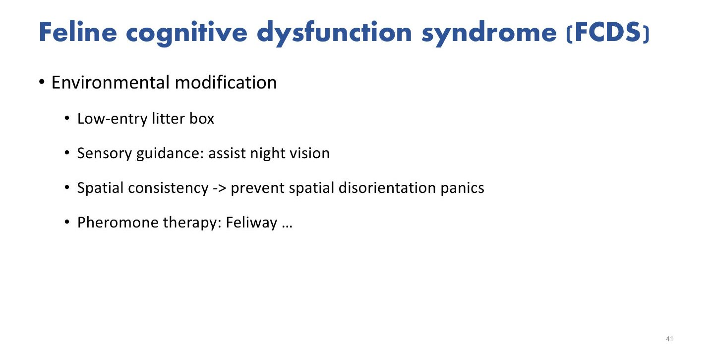
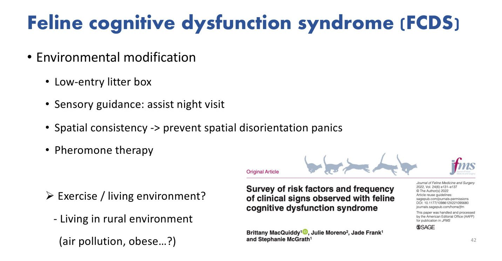
- 低入口貓砂盆（方便關節炎老貓進出）。
- 感官引導：協助夜間視覺（夜燈）。
- 空間一致性：擺設不要變動，避免空間定向障礙引發恐慌。
- 費洛蒙療法：Feliway⋯
- 運動／生活環境的影響？住在鄉村環境（空氣污染、肥胖⋯？）
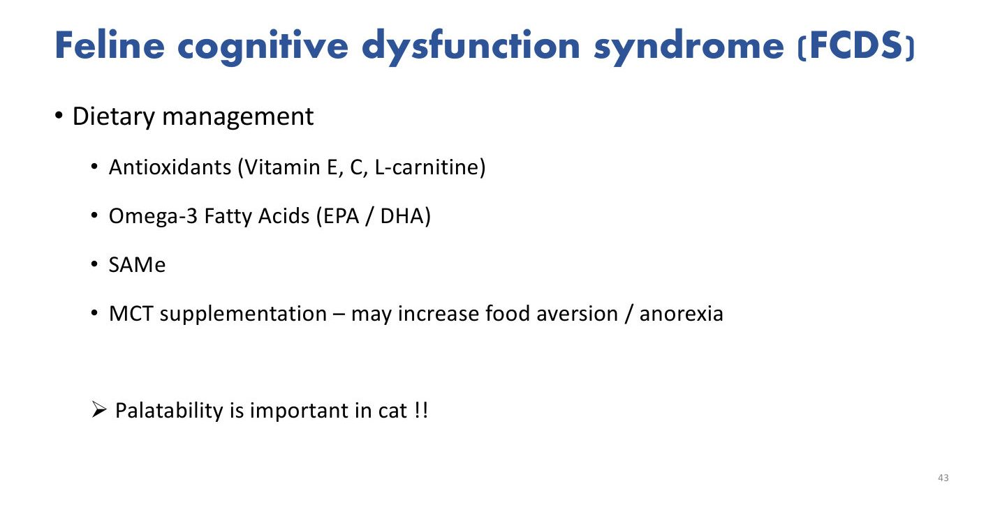
- 抗氧化物（維生素 E、C、L-carnitine）、Omega-3（EPA／DHA）、SAMe。
- MCT 補充可能增加食物厭惡／厭食。
- 對貓來說適口性很重要！！

- Selegiline、propentofylline（貓為仿單外使用）。
- 抗焦慮藥、抗憂鬱劑用來控制症狀。
- 對貓來說，壓力管理更重要！！
10. 結論
▾
- 早期辨識
- 系統性排除其他疾病
- 多模式治療
- 飼主衛教


貝爾動物醫院博館分院提供神經暨進階影像（MRI）轉診服務；投影片附醫師專用轉診 MRI 表單，以及「國內抗癲癇藥使用問卷調查」QR code。